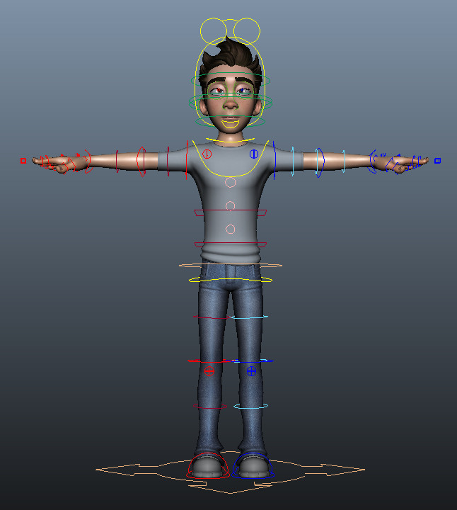

Character Picker
... o cómo hacer un sinóptico corporal en Autodesk Maya.
por Cesar Saez | @csaezmargotta
Hoy hablaremos sobre...
- Sinópticos
- Python
- Maya APIs (cmds, pymel, openmaya)
- Qt (PyQt4, PySide)
- Qt Designer
- QGraphicsScene (canvas)
Sinóptico?
Interfaz gráfica mediante la cual 'no-riggers' interactúan con los rigs en producción, es su centro de operaciones.
Animum rig: Mario
Los números de Mario:
- 1950+ nodos
- 100+ controles anim. cuerpo
- 45+ controles anim. faciales
- 790+ atributos animables
- ...
+control → +gestión
Según la complejidad del rig, llega un punto en que resulta poco eficiente seleccionar los controles de animación desde el visor 3D.
Camera View + Graph Editor + Picker
✌
Referencias...
 animSelector, Luca Fiorentini
animSelector, Luca Fiorentini
Unreal Engine 4, Epic Games

The Pirates, Martin Orlowski - Aardman
Frozen, Walt Disney Animation Studios
Frozen, Walt Disney Animation Studios
Interfaz gráfica → Scripting
Maya Embedded Language (MEL) o Python?Python!
- Lenguaje de uso general
- Licencia de código abierto
- Interpretado, tipado dinámico, multiplataforma
- Sintaxis muy limpia, código legible
- Baterías incluídas (std library)
- Multiparadigma
- ...
PEP 20 - The Zen of Python
- Beautiful is better than ugly
- Explicit is better than implicit
- Simple is better than complex
- Complex is better than complicated
- Readability counts
- ...
Qt Bindings
Qt (c++ UI framework) en python.
- PyQt - GNU General Public License v3, commercial
- PySide - LGPL version 2.1 (incluído en Maya >= 2014)
Volveré sobre esto más adelante...
Python en Maya
- cmds: acceso a comandos MEL en python
- pymel: implementación 'pythonic' de python en Maya
- openmaya: acceso a la API de maya (bajo nivel)
Python (cmds) → Maya → Qt
GUI mediante comandos:
animSelector, Luca Fiorentini
Pseudo código
from maya import cmds
# ((label, target_names, color), ...)
data = (("all", tuple(), None),
("cog", ("mario_ac_cn_cog",), None),
("head", ("mario_ac_cn_head",), None),
...)
w = cmds.window(title="Mario Picker")
cmds.verticalLayout(w, adjustable=True)
for (l, t, c) in data:
cmds.button(label=l, color=c,
command=lambda _, x=t: cmds.select(x))
cmds.showWindow(w)
DEMO...
Limitaciones:
- GUI estática, válida para 1 rig (Mario)
- No es posible usar imágenes/iconos
- Control limitado mediante layouts
- Diseño de la GUI mediante código
- Sólo botones rectangulares
Alternativas?
Qt, code less...
Qt es una librería multiplataforma para desarrollar interfaces gráficas en C++, Maya utiliza internamente Qt para dibujar su GUI.
Python (*PySide) → Qt ← Maya
*Asumiremos PySide como Qt binding de aquí en más...
Qt Designer
.../autodesk/mayaXXXX/bin/designer
DEMO...
ui → PySide
# file: pyside-uic.py
import sys
from pysideuic import compileUi
def convert(ui_file):
output_file = ".".join(ui_file.split(".")[:-1]) + ".py"
with open(output_file, "w") as fp:
compileUi(ui_file, fp, False, 4, False)
if __name__ == "__main__" and len(sys.argv) == 2:
convert(sys.argv[1])
#!/bin/bash
# file: pyside-uic.sh
.../autodesk/mayaXXXX/bin/mayapy .../pyside-uic.py $1
Maya → PySide
# file: qt_utils.py
from PySide.QtGui import QMainWindow # qt widget
from shiboken import wrapInstance # parte de lib PySide
from maya.OpenMayaUI import MQtUtil # utilidades Qt maya
def get_anchor():
ptr = MQtUtil.mainWindow() # puntero a la ventana de maya (c++)
return wrapInstance(long(ptr), QMainWindow) # instancia QMainWindow desde ptr
Python → PySide
from qt_utils import get_anchor # maya mainwindow
from picker import Dialog_Ui # ui convertido
class Picker(DialogUi): # heredamos del ui convertido
def __init__(self, parent, data):
super(Picker, self).__init__(parent)
self.data = data
self.connect_buttons() # conectamos botones
def connect_buttons(self):
for w in self.children():
if not w.objectName().startswith("ui_"):
continue
target_names = self.data.get(w.objectName())
w.connect.clicked(lambda t=target_names: cmds.select(t))
app = Picker(parent=get_anchor())
app.show()
Limitaciones:
- GUI estática, válida para 1 rig (Mario)
- No es posible usar imágenes/iconos
- Control limitado mediante layouts
- Diseño de la GUI mediante código
- Sólo botones rectangulares